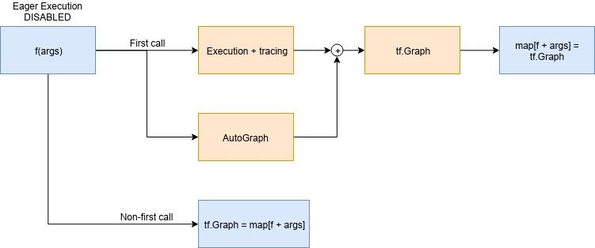
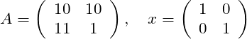
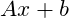

Dissecting tf.function to discover AutoGraph strengths and subtleties
How to correctly write graph-convertible functions in TensorFlow 2.0.About me
Computer engineer | Head of ML & CV @ ZURU Tech Italy | Machine Learning GDE
- Blog: https://pgaleone.eu/
- Github: https://github.com/galeone/
- Twitter: @paolo_galeone
TensorFlow 2.0 & DataFlow Graphs
- Execution Speed
- Language Agnostic Representation
- Easy to replicate and distribute
- Automatic Differentiation
tf.function and AutoGraph
# tf.function signature: it is a decorator.
def function(func=None,
input_signature=None,
autograph=True,
experimental_autograph_options=None)
tf.function uses AutoGraph
AutoGraph converts Python control flow statements into appropriate TensorFlow graph ops.
tf.function and AutoGraph

The problem
Given the constant matrices

And the scalar variable
Compute 
TensorFlow 1.x solution
g = tf.Graph()
with g.as_default():
a = tf.constant([[10,10],[11.,1.]])
x = tf.constant([[1.,0.],[0.,1.]])
b = tf.Variable(12.)
y = tf.matmul(a, x) + b
init_op = tf.global_variables_initializer()
with tf.Session() as sess:
sess.run(init_op)
print(sess.run(y))
TensorFlow 2.0 solution: eager execution
def f():
a = tf.constant([[10,10],[11.,1.]])
x = tf.constant([[1.,0.],[0.,1.]])
b = tf.Variable(12.)
y = tf.matmul(a, x) + b
return y
print([f().numpy() for _ in range(10)])
Every tf.* op, produces a tf.Tensor object
From eager function to tf.function
@tf.function
def f():
a = tf.constant([[10,10],[11.,1.]])
x = tf.constant([[1.,0.],[0.,1.]])
b = tf.Variable(12.)
y = tf.matmul(a, x) + b
print("PRINT: ", y)
tf.print("TF-PRINT: ", y)
return y
f()
From eager function to tf.function
PRINT: Tensor("add:0", shape=(2, 2), dtype=float32)
From eager function to tf.function
ValueError: tf.function-decorated function tried to create variables on non-first call.
Lesson #1: functions that create a state
A
tf.Variableobject in eager mode is just a Python object that gets destroyed as soon as it goes out of scope.
A
tf.Variableobject in a tf.function-decorated function is the definition of a node in a persistent graph (eager execution disabled).
The solution
class F():
def __init__(self):
self._b = None
@tf.function
def __call__(self):
a = tf.constant([[10, 10], [11., 1.]])
x = tf.constant([[1., 0.], [0., 1.]])
if self._b is None:
self._b = tf.Variable(12.)
y = tf.matmul(a, x) + self._b
print("PRINT: ", y)
tf.print("TF-PRINT: ", y)
return y
f = F()
f()
Lesson #2: eager function is not graph-convertible as is
There is no 1:1 match between eager execution and the graph built by
@tf.function.Define the function thinking about the graph that is being built.
Change the input type
- Python is a dynamically-typed language
- TensorFlow is a strictly statically typed framework
The function
@tf.function
def f(x):
print("Python execution: ", x)
tf.print("Graph execution: ", x)
return x
The function parameters type is used to create a graph, that is a statically typed object, and to assign it an ID
tf.Tensor as input
print("##### float32 test #####")
a = tf.constant(1, dtype=tf.float32)
print("first call")
f(a)
a = tf.constant(1.1, dtype=tf.float32)
print("second call")
f(a)
print("##### uint8 test #####")
b = tf.constant(2, dtype=tf.uint8)
print("first call")
f(b)
b = tf.constant(3, dtype=tf.uint8)
print("second call")
f(b)
tf.Tensor as input
##### float32 test #####
first call
Python execution: Tensor("x:0", shape=(), dtype=float32)
Graph execution: 1
second call
Graph execution: 1.1
##### uint8 test #####
first call
Python execution: Tensor("x:0", shape=(), dtype=uint8)
Graph execution: 2
second call
Graph execution: 3
Everything goes as we expect
Inspecting the function
tf.autograph.to_code(f.python_function)
def tf__f(x):
try:
with ag__.function_scope('f'):
do_return = False
retval_ = None
with ag__.utils.control_dependency_on_returns(ag__.converted_call(print, None, ag__.ConversionOptions(recursive=True, force_conversion=False, optional_features=ag__.Feature.ALL, internal_convert_user_code=True), ('Python execution: ', x), {})):
tf_1, x_1 = ag__.utils.alias_tensors(tf, x)
with ag__.utils.control_dependency_on_returns(ag__.converted_call('print', tf_1, ag__.ConversionOptions(recursive=True, force_conversion=False, optional_features=ag__.Feature.ALL, internal_convert_user_code=True), ('Graph execution: ', x_1), {})):
x_2 = ag__.utils.alias_tensors(x_1)
do_return = True
retval_ = x_1
return retval_
except:
ag__.rewrite_graph_construction_error(ag_source_map__)
Inspecting the function
with ag__.utils.control_dependency_on_returns(
ag__.converted_call(
print, None, ag__.ConversionOptions(
recursive=True,
force_conversion=False,
optional_features=ag__.Feature.ALL,
internal_convert_user_code=True),
('Python execution: ', x), {})
):
converted_call owner parameter is None: this line becomes a tf.no_op()
Python native type as input
def printinfo(x):
print("Type: ", type(x), " value: ", x)
print("##### int test #####")
print("first call")
a = 1
printinfo(a)
f(a)
print("second call")
b = 2
printinfo(b)
f(b)
print("##### float test #####")
print("first call")
a = 1.0
printinfo(a)
f(a)
print("second call")
b = 2.0
printinfo(b)
f(b)
Python native type as input
Call with Python int
##### int test #####
first call
Type: <class 'int'> value: 1
Python execution: 1
Graph execution: 1
second call
Type: <class 'int'> value: 2
Python execution: 2
Graph execution: 2
The graph is being recreated at every function invocation
Python native type as input
Call with Python float
##### float test #####
first call
Type: <class 'float'> value: 1.0
Graph execution: 1
second call
Type: <class 'float'> value: 2.0
Graph execution: 2
- The return type is WRONG.
- The graphs built for the integers 1 and 2 is reused for the float 1.0 and 2.0
Lesson #3: no autoboxing
tf.functiondoes not automatically convert a Python integer to atf.Tensorwith dtypetf.int64, and so on.The graph ID, when the input is not a
tf.Tensorobject, is built using the variable value.
That's why we used the same graph built for f(1) for f(1.0), because 1 == 1.0.
No autoboxing: performance measurement
@tf.function
def g(x):
return x
start = time.time()
for i in tf.range(1000):
g(i)
print("tf.Tensor time elapsed: ", (time.time()-start))
start = time.time()
for i in range(1000):
g(i)
print("Native type time elapsed: ", (time.time()-start))
tf.Tensor time elapsed: 0.41594886779785156
Native type time elapsed: 5.189513444900513
Lesson #4: tf.Tensor everywhere
Use
tf.Tensoreverywhere.
Python Operators
@tf.function
def if_elif(a, b):
if a > b:
tf.print("a > b", a, b)
elif a == b:
tf.print("a == b", a, b)
elif a < b:
tf.print("a < b", a, b)
else:
tf.print("wat")
x = tf.constant(1)
if_elif(x,x)
Python operators
wat
Problems
- Python
__eq__is not converted totf.equal(even in eager mode!) but checks for the Python variable identity. - AutoGraph converts the
if,elif,elsestatements but - AutoGraph does not converts the Python built-in operators (
__eq__,__lt__,__gt__)
Python operators
@tf.function
def if_elif(a, b):
if tf.math.greater(a, b):
tf.print("a > b", a, b)
elif tf.math.equal(a, b):
tf.print("a == b", a, b)
elif tf.math.less(a, b):
tf.print("a < b", a, b)
else:
tf.print("wat")
Lesson 5: operators
Use the TensorFlow operators explicitly everywhere.
Things are changing
Hey @paolo_galeone, great blog post series on tf.function! I've tried the if_elif_else case (from part 3: https://t.co/HukmaUY4dL) this afternoon, and it looks like it has been fixed in 2.0.0rc0. Thought you might want to know
— Raphael Meudec (@raphaelmeudec) September 13, 2019
The lessons presented, however, are all still valid: following them helps you writing idiomatic TensorFlow 2.0 code.
Recap
tf.Variableneed a special treatment.- Think about the graph while designing the function: eager to graph is not straightforward.
- There is no autoboxing of Python native types, therefore
- Use
tf.Tensoreverywhere. - Use the TensorFlow operators explicitly everywhere.
Hands-On Neural Networks with TensorFlow 2.0
Understand TensorFlow, from static graph to eager execution, and design neural networks.
Stay updated: https://pgaleone.eu/subscribe
The End
Thank you 😄
- Blog: https://pgaleone.eu/
- Twitter: https://twitter.com/paolo_galeone
- GitHub: https://github.com/galeone